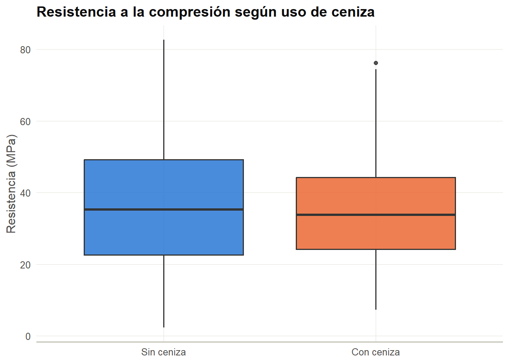

Capítulo 5 Comparación de mezclas con y sin ceniza volante
Este capítulo desarrolla el objetivo específico 2: comparar la resistencia media entre mezclas con y sin ceniza volante y calcular el tamaño del efecto.
5.1 Hipótesis
Sea \(\mu_{\text{sin}}\) la resistencia media de las mezclas sin ceniza y \(\mu_{\text{con}}\) la de las mezclas con ceniza.
\[H_0: \mu_{\text{sin}} = \mu_{\text{con}} \qquad \text{vs.} \qquad H_1: \mu_{\text{sin}} \neq \mu_{\text{con}}\]
Nivel de significancia: \(\alpha = 0.05\).
5.2 Descripción por grupo
df_fe |>
group_by(usa_ceniza) |>
summarise(
n = n(),
media = mean(resistencia),
sd = sd(resistencia),
mediana = median(resistencia),
Q1 = quantile(resistencia, 0.25),
Q3 = quantile(resistencia, 0.75),
.groups = "drop"
) |>
tabla_kbl("Resistencia (MPa) según uso de ceniza volante")| usa_ceniza | n | media | sd | mediana | Q1 | Q3 |
|---|---|---|---|---|---|---|
| Sin ceniza | 566 | 36.772 | 18.445 | 35.301 | 22.557 | 49.197 |
| Con ceniza | 464 | 34.654 | 14.234 | 33.743 | 24.214 | 44.280 |
df_fe |>
ggplot(aes(x = usa_ceniza, y = resistencia, fill = usa_ceniza)) +
geom_boxplot(alpha = 0.85, show.legend = FALSE) +
scale_fill_manual(values = cols_ceniza) +
labs(
title = "Resistencia a la compresión según uso de ceniza",
x = NULL,
y = "Resistencia (MPa)"
) +
tema_libro()
5.3 Supuestos de la prueba
Antes de comparar las medias se verifican los supuestos con \(\alpha = 0.05\):
- Normalidad en cada grupo. \(H_0\): la resistencia del grupo es normal, frente a \(H_1\): no lo es.
- Homogeneidad de varianzas (Levene). \(H_0: \sigma^2_{\text{sin}} = \sigma^2_{\text{con}}\), frente a \(H_1: \sigma^2_{\text{sin}} \neq \sigma^2_{\text{con}}\).
- Independencia. Los dos grupos están formados por mezclas diferentes (una mezcla es con o sin ceniza), pero dentro de cada grupo una misma mezcla se ensaya a varias edades (sección 3.9.3). Esas filas están correlacionadas, por lo que Welch y Wilcoxon son demasiado optimistas; se verifica con errores estándar agrupados por mezcla.
res_sin <- df_fe$resistencia[df_fe$usa_ceniza == "Sin ceniza"]
res_con <- df_fe$resistencia[df_fe$usa_ceniza == "Con ceniza"]
levene <- car::leveneTest(resistencia ~ usa_ceniza, data = df_fe)
p_levene <- levene[["Pr(>F)"]][1]
supuestos_comp <- bind_rows(
fila_sup("Normalidad (Sin ceniza)", "Lilliefors",
"resistencia es normal en el grupo", nortest::lillie.test(res_sin)$p.value),
fila_sup("Normalidad (Con ceniza)", "Lilliefors",
"resistencia es normal en el grupo", nortest::lillie.test(res_con)$p.value),
fila_sup("Igualdad de varianzas", "Levene",
"Las varianzas de ambos grupos son iguales", p_levene)
)
supuestos_comp |>
tabla_kbl("Verificación de supuestos para la comparación de dos grupos", digits = 4)| supuesto | prueba | H0 | p_valor | decision |
|---|---|---|---|---|
| Normalidad (Sin ceniza) | Lilliefors | resistencia es normal en el grupo | 0.0011 | Se rechaza H0 |
| Normalidad (Con ceniza) | Lilliefors | resistencia es normal en el grupo | 0.1070 | No se rechaza H0 |
| Igualdad de varianzas | Levene | Las varianzas de ambos grupos son iguales | 0.0000 | Se rechaza H0 |
Decisión sobre la prueba. La prueba \(t\) de Welch no exige varianzas iguales, y con grupos grandes (\(n_{\text{sin}} = 566\), \(n_{\text{con}} = 464\)) tolera desviaciones moderadas de la normalidad. Aun así, se usa la prueba no paramétrica de Wilcoxon como respaldo: si ambas coinciden, la conclusión no depende del supuesto de normalidad. Para la homogeneidad de varianzas: se rechaza H0 (varianzas distintas), lo que justifica usar Welch y no la t clásica (\(p < 0.001\)).
5.4 Prueba de hipótesis
# Prueba t de Welch
prueba_welch <- t.test(resistencia ~ usa_ceniza, data = df_fe, var.equal = FALSE)
prueba_welch##
## Welch Two Sample t-test
##
## data: resistencia by usa_ceniza
## t = 2.0785, df = 1024.4, p-value = 0.03791
## alternative hypothesis: true difference in means between group Sin ceniza and group Con ceniza is not equal to 0
## 95 percent confidence interval:
## 0.1183827 4.1163339
## sample estimates:
## mean in group Sin ceniza mean in group Con ceniza
## 36.77167 34.65432# Respaldo no paramétrico
prueba_wilcoxon <- wilcox.test(resistencia ~ usa_ceniza, data = df_fe, conf.int = TRUE)
prueba_wilcoxon##
## Wilcoxon rank sum test with continuity correction
##
## data: resistencia by usa_ceniza
## W = 136985, p-value = 0.2324
## alternative hypothesis: true location shift is not equal to 0
## 95 percent confidence interval:
## -0.7715629 3.3646650
## sample estimates:
## difference in location
## 1.2741585.5 Tamaño del efecto
##
## Cohen's d
##
## d estimate: 0.1269361 (negligible)
## 95 percent confidence interval:
## lower upper
## 0.00392516 0.24994705La \(d\) de Cohen es 0.13, un efecto despreciable (menor que 0.2). La diferencia media de unos 2.1 MPa es pequeña frente a la variación entre mezclas (desviaciones de 14 a 18 MPa).
5.6 Corrección por mezclas repetidas
La diferencia de medias equivale al coeficiente de usa_ceniza en una regresión simple. Se contrasta con errores estándar agrupados por mezcla (con \(G - 1\) grados de libertad, \(G\) = número de mezclas), que respetan la dependencia entre filas de una misma mezcla.
m_dif <- lm(resistencia ~ usa_ceniza, data = df_fe)
V_dif <- vcov_cluster(m_dif, df_fe$id_mezcla)
G_mezclas <- n_distinct(df_fe$id_mezcla)
tabla_robusta(m_dif, V_dif, gl = G_mezclas - 1) |>
tabla_kbl("Diferencia de medias con errores estándar agrupados por mezcla", digits = 4)| termino | estimacion | ee_robusto | t | p_valor |
|---|---|---|---|---|
| (Intercept) | 36.7717 | 1.5255 | 24.1054 | 0.0000 |
| usa_cenizaCon ceniza | -2.1174 | 1.7252 | -1.2273 | 0.2204 |
Welch encuentra una diferencia de 2.1 MPa que parece significativa (\(p = 0.038\)), pero Wilcoxon no (\(p = 0.23\)). Al tener en cuenta que una misma mezcla aparece varias veces, el \(p\) sube a 0.22 y la diferencia deja de ser significativa. Con los datos crudos no hay evidencia firme de que la resistencia media difiera entre mezclas con y sin ceniza.
5.7 ¿Es una comparación justa? Balance de las mezclas
Las mezclas con ceniza no son la misma receta con ceniza añadida: difieren en otros ingredientes y en la edad de ensayo. Esto puede sesgar la comparación directa.
df_fe |>
group_by(usa_ceniza) |>
summarise(
n = n(),
edad_media = mean(edad),
cemento = mean(cemento),
escoria = mean(escoria),
agua = mean(agua),
superplast = mean(superplast),
razon_agua_aglutinante = mean(razon_agua_aglutinante),
.groups = "drop"
) |>
tabla_kbl("Características medias de las mezclas por uso de ceniza")| usa_ceniza | n | edad_media | cemento | escoria | agua | superplast | razon_agua_aglutinante |
|---|---|---|---|---|---|---|---|
| Sin ceniza | 566 | 55.041 | 314.038 | 100.110 | 186.617 | 4.055 | 0.485 |
| Con ceniza | 464 | 34.222 | 241.067 | 41.918 | 175.406 | 8.823 | 0.450 |
##
## Sin superplastificante Con superplastificante
## Sin ceniza 373 193
## Con ceniza 6 458Las mezclas con ceniza no son las mismas recetas con un ingrediente extra: llevan menos cemento (241 frente a 314 kg/m³), menos escoria (42 frente a 100), más superplastificante (8.8 frente a 4.1) y se ensayaron a edades más cortas (34 frente a 55 días en promedio). Casi todas usan superplastificante (458 de 464). Por eso la diferencia cruda no mide el efecto de la ceniza sola: mezcla el efecto de la ceniza con el de todas esas diferencias.
5.8 Comparación ajustada por covariables
Para aislar el efecto de la ceniza se ajusta un modelo lineal que controla por edad (en logaritmo) y por los demás ingredientes.
modelo_ajustado <- lm(
resistencia ~ usa_ceniza + log_edad + cemento + escoria + agua + superplast,
data = df_fe
)
summary(modelo_ajustado)##
## Call:
## lm(formula = resistencia ~ usa_ceniza + log_edad + cemento +
## escoria + agua + superplast, data = df_fe)
##
## Residuals:
## Min 1Q Median 3Q Max
## -21.6679 -4.3761 0.0475 3.9472 29.9148
##
## Coefficients:
## Estimate Std. Error t value Pr(>|t|)
## (Intercept) 12.495396 2.822699 4.427 0.0000106 ***
## usa_cenizaCon ceniza 8.760244 0.656639 13.341 < 0.0000000000000002 ***
## log_edad 8.687260 0.188809 46.011 < 0.0000000000000002 ***
## cemento 0.110304 0.002764 39.909 < 0.0000000000000002 ***
## escoria 0.088695 0.003348 26.494 < 0.0000000000000002 ***
## agua -0.251079 0.014294 -17.566 < 0.0000000000000002 ***
## superplast -0.016502 0.058129 -0.284 0.777
## ---
## Signif. codes: 0 '***' 0.001 '**' 0.01 '*' 0.05 '.' 0.1 ' ' 1
##
## Residual standard error: 7.074 on 1023 degrees of freedom
## Multiple R-squared: 0.8217, Adjusted R-squared: 0.8207
## F-statistic: 785.9 on 6 and 1023 DF, p-value: < 0.00000000000000022## 2.5 % 97.5 %
## 7.47173 10.04876Este modelo es solo una primera aproximación para contrastar la diferencia cruda. Se verifican sus supuestos y su multicolinealidad; el modelo definitivo (con transformación de la respuesta, selección por AIC y diagnóstico completo) se desarrolla en el capítulo 8.
bind_rows(
fila_sup("Normalidad de los errores", "Shapiro-Wilk",
"Los errores son normales", shapiro.test(resid(modelo_ajustado))$p.value),
fila_sup("Varianza constante", "Breusch-Pagan",
"Var(error) es constante", lmtest::bptest(modelo_ajustado)$p.value)
) |>
tabla_kbl("Supuestos de los errores del modelo ajustado (escala original)", digits = 4)| supuesto | prueba | H0 | p_valor | decision |
|---|---|---|---|---|
| Normalidad de los errores | Shapiro-Wilk | Los errores son normales | 0.0005 | Se rechaza H0 |
| Varianza constante | Breusch-Pagan | Var(error) es constante | 0.0000 | Se rechaza H0 |
car::vif(modelo_ajustado) |>
enframe(name = "variable", value = "VIF") |>
tabla_kbl("VIF del modelo ajustado (problema si VIF > 5)", digits = 2)| variable | VIF |
|---|---|
| usa_ceniza | 2.20 |
| log_edad | 1.04 |
| cemento | 1.72 |
| escoria | 1.72 |
| agua | 1.92 |
| superplast | 2.48 |
Al controlar por la edad y por los demás ingredientes, la ceniza pasa de “restar” 2.1 MPa a “sumar” 8.8 MPa (IC 7.5 a 10.0). El signo cambia porque las mezclas con ceniza eran más jóvenes y tenían menos cemento y escoria, y eso las hacía parecer más débiles. El modelo explica el 82% de la variación (\(R^2\) ajustado 0.82). Es una primera aproximación: sus errores no son normales ni tienen varianza constante, por eso el modelo definitivo está en el capítulo 8.
5.9 Conclusión parcial del objetivo 2
- Comparación directa: las mezclas sin ceniza resisten 2.1 MPa más en promedio, pero la diferencia no es significativa una vez que se tiene en cuenta que las mezclas se repiten (\(p = 0.22\)) y el efecto es despreciable (\(d = 0.13\)). No se rechaza \(H_0\).
- Comparación ajustada: al igualar edad e ingredientes, la ceniza se asocia con +8.8 MPa. La comparación directa no es justa porque las mezclas con ceniza son distintas en otras cosas.
- Mensaje: el efecto de la ceniza solo se ve al separarlo de los demás ingredientes y de la edad.